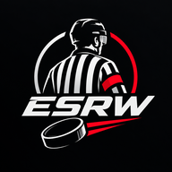

Offline, gespeicherter Stand
Neu in der App
In drei Schritten startklar
- 1Namen wählenUnten in der Liste antippen. Das ist dein Profil auf diesem Gerät.
- 2Kalender abonnierenEin Tipp auf „Im Kalender abonnieren“, danach kommen neue Spiele von allein aufs Handy.
- 3Konto anlegenUnter „Mehr“: Abrechnung, Notizen, Push. Freischalten muss dich der Betreiber.
Kalender abonniert ✓ · Konto anlegen für Abrechnung, Notizen und Push.

Als App aufs Handy
Spielplan
Wer bist du?
Kein Name gefunden.
dein Profil
Dein Profil wird geladen …
Die Einteilungen liegen verschlüsselt – das dauert einen Moment.
Kalendernoch nicht abonniert
Im Kalender abonnieren
Benachrichtigungen
Wie abonniere ich das?
iPhone / iPad
- Oben auf Im Kalender abonnieren tippen.
- iOS fragt nach, dann mit Abonnieren bestätigen.
- Bei „Alarme entfernen“ auf AUS stellen, sonst kommen keine Erinnerungen.
- Wie viele Erinnerungen es gibt und was im Termintitel steht, wählst du selbst: Kalender einstellen.
- Unter Aktualisieren „Alle 15 Minuten“ oder „Stündlich“ wählen.
Falls nichts passiert: Einstellungen → Apps → Kalender → Accounts → Account hinzufügen → Andere → Kalenderabo hinzufügen, dort den kopierten Link einsetzen.
Android / Google Kalender
- Link kopieren antippen.
- Am Rechner auf calendar.google.com → „Per URL hinzufügen“. Der Link muss mit
httpsanfangen. - Nach ein paar Minuten steht der Kalender auch im Handy.
Der Kalender ist nur lesend. Neue Einteilungen, Absetzungen und Zeitänderungen kommen von allein nach.
Mehr
EinstellungenKonto, App, Startseite, Leiste
Aussehengilt für dieses Gerät, mit Konto auf allen
KalenderWas in deinen Terminen steht und wann der Wecker klingelt
UnterwegsRoute, Abfahrt und dein Ziel für die Saison
StartseiteProfil, nächstes Spiel und deine Spiele sind immer dabei
Reihenfolge auf StartWas zuerst kommt, die Kopfkarte bleibt oben
SchnellzugriffWelche Knöpfe unter der Kopfkarte stehen
Leiste untenDie drei mittleren Plätze frei belegen, „Start“ und „Mehr“ bleiben
BereicheWas du nicht brauchst, blendest du für dich aus, nur auf deinen Geräten
SicherungEinstellungen und Rechnungsdaten als Datei
RegelnStrafenmatrix und Bestimmungen
StrafrechnerStärke auf dem Eis
Hallenkartealle Hallen aus den Einteilungen
Statistik aus dem Archiv
Alle Spiele im Archiv
Zusammen fahrenWer fährt wohin, Mitfahrt anbieten oder suchen
Archivalle deine Spiele, alle Saisons
ÄnderungenWas sich getan hat, mit Vorher und Nachher
Nur für Mitgliederanmelden oder Konto anlegen
Dieser Bereich
Diagnosefür die Fehlersuche, nichts davon geht irgendwohin
HalleAdresse, Route, Spiele, Hinweise
Eishalle